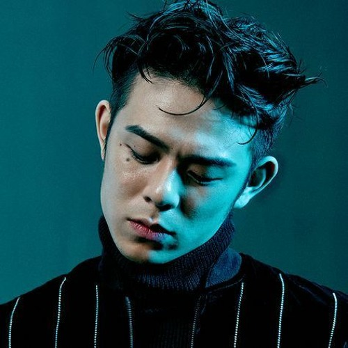

beenzino
Lim Sung-bin (Korean: 임성빈; born September 12, 1987),[1] better known by the stage name Beenzino (Hangul: 빈지노), is a South Korean rapper.[2] His stage name is a play on that of Boston rapper Benzino, combined with "빈" (pronounced "been") from his birth name.[3] Beenzino made his first official public appearance at Dok2's Hustle Real Hard Concert on June 5, 2011 and has since released three solo albums, as well as other works in collaboration with hip hop producers Primary and Shimmy Twice, and as the duo Hot Clip with South Korean rapper Beatbox DG.[4] He is noted for his melodic style of rapping.[5]
After establishing his reputation within the Korean rap scene, he became well known through singles such as "Dali, Van, Picasso", which was a mainstream hit.[5] Beenzino toured as a solo artist in the U.S. in 2015.[6]